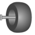

VoluminousWheelVisualizing a voluminous wheel |

|
Diagram
Information
This information is part of the Modelica Standard Library maintained by the Modelica Association.
Model VoluminousWheel provides a simple visualization of a tire using a torus and a pipe shape object. The center of the wheel is located at connector frame_a (visualized by the red coordinate system in the figure below).

{kind=link}
Parameters (9)
| animation |
Value: true Type: Boolean Description: = true, if animation shall be enabled |
|---|---|
| rTire |
Value: 0.25 Type: Radius (m) Description: Radius of the tire |
| rRim |
Value: 0.14 Type: Radius (m) Description: Radius of the rim |
| width |
Value: 0.25 Type: Radius (m) Description: Width of the tire |
| rCurvature |
Value: 0.30 Type: Radius (m) Description: Radius of the curvature of the tire |
| color |
Value: {64, 64, 64} Type: RealColor Description: Color of tire |
| specularCoefficient |
Value: 0.5 Type: SpecularCoefficient Description: Reflection of ambient light (= 0: light is completely absorbed) |
| n_rTire |
Value: 40 Type: Integer Description: Number of points along rTire |
| n_rCurvature |
Value: 20 Type: Integer Description: Number of points along rCurvature |
Connectors (1)
| frame_a |
Type: Frame_a Description: Coordinate system in which visualization data is resolved |
|---|
Components (3)
Used in Examples (1)
|
Modelica.Mechanics.MultiBody.Examples.Elementary
Demonstrate the visualization of a sine surface, as well as a torus and a wheel constructed from a surface |